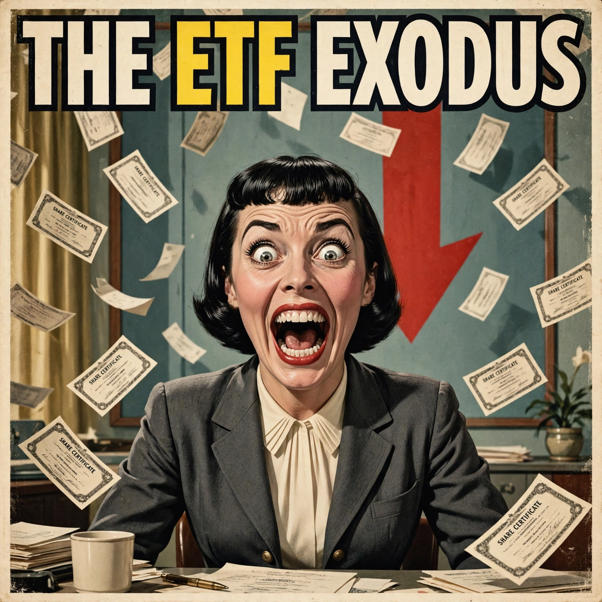
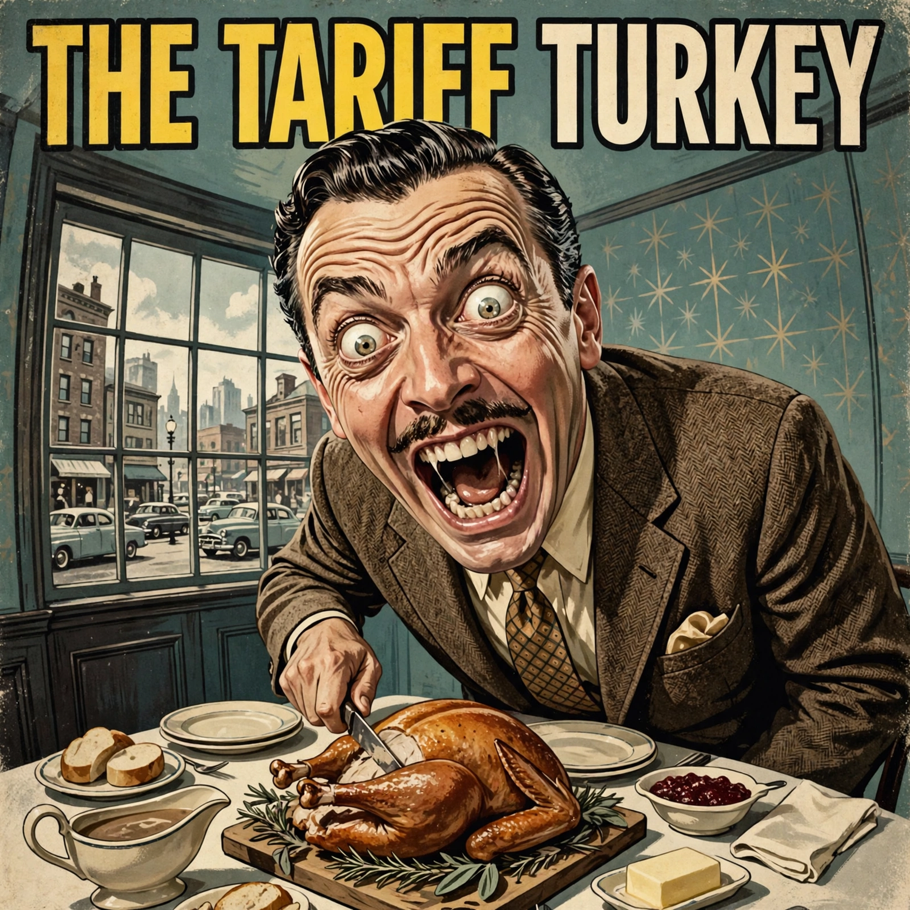
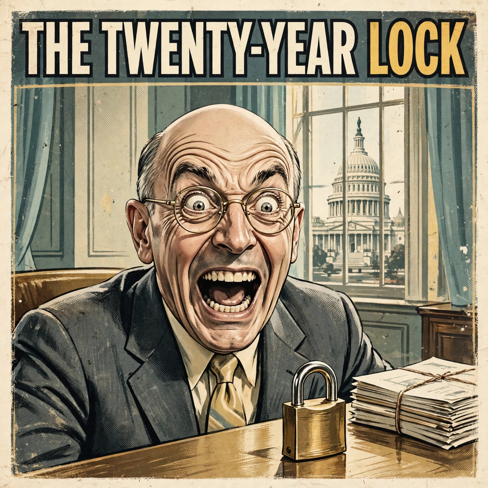
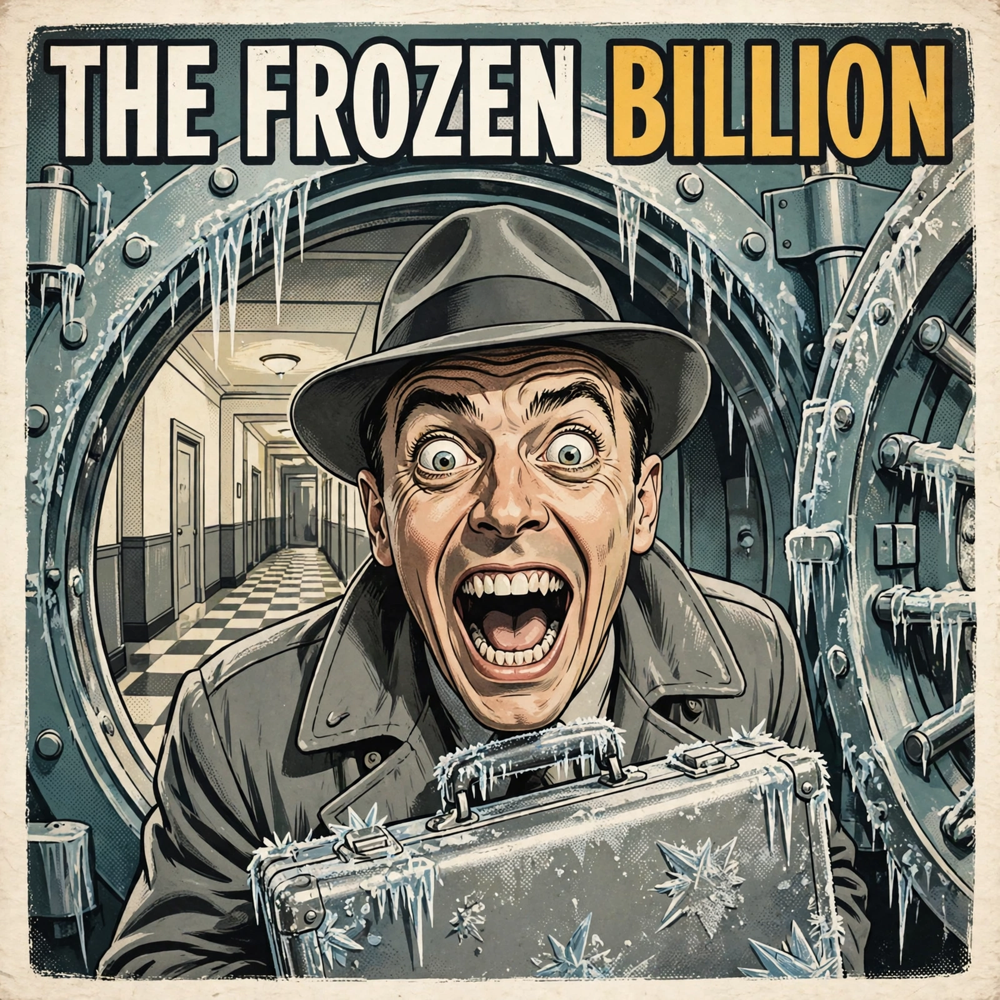

Bitcoin Stories — Thursday, Nov 26, 2026

Bitcoin fell to about $57,242 on Wednesday after hot October PCE inflation data, then stormed back above $60,000 to close near $60,378 — up 1.06% on the day — and touched $61,533 early Thursday, with $143 million in short positions liquidated on the rebound.
Read the full story →
US spot Bitcoin ETFs lost $453 million on November 25, a seventh straight day of outflows; November's total now stands at $5.39 billion — the worst month since the funds launched — with BlackRock's IBIT alone shedding $330 million.
Read the full story →
October core PCE inflation came in hot at 3.3% and third-quarter GDP was revised up to 4.3%, while the White House proposed new tariffs on 14 trading partners — and the Nasdaq 100 slid into a bear market, down 20% from its October record.
Read the full story →
The House Financial Services Committee formally reported H.R. 8957, the American Reserve Modernization Act, sending it to the full House; the bill would write the Strategic Bitcoin Reserve into law and bar the Treasury from selling its bitcoin for at least 20 years.
Read the full story →
The Justice Department filed a civil forfeiture complaint seeking about $1.17 billion in USDC tied to the October 29 Binance hack, blamed on North Korea's Lazarus Group; Circle has agreed to issue replacement tokens to the US once a judge signs off.
Read the full story →